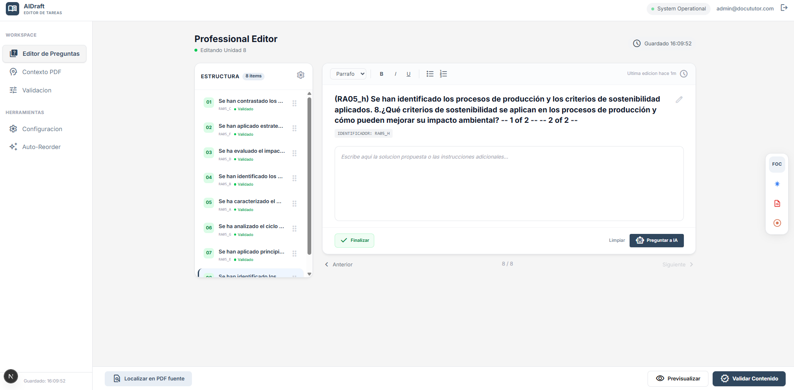
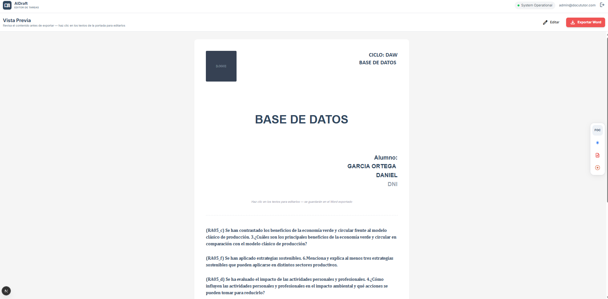

Entrada flexible
Permite trabajar desde PDF, Word o texto pegado para iniciar el borrador sin cambiar de flujo.
Proyecto destacado
Generador de borradores academicos con IA.
Aplicacion orientada a estudiantes y docentes para convertir enunciados en PDF, Word o texto en borradores editables, estructurados y preparados para exportar a Word.

Permite trabajar desde PDF, Word o texto pegado para iniciar el borrador sin cambiar de flujo.
Organiza el contenido con plantillas academicas y pasos guiados para mantener estructura.
Prepara el resultado para revisar, editar y exportar el documento final a Word.
Tecnologias
Problema
Crear borradores academicos desde documentos largos exige tiempo, orden y revisiones repetitivas.
Solucion
Un flujo guiado que centraliza subida, seleccion de plantilla, validacion, edicion y exportacion.
Resultado
Una herramienta mas rapida para pasar de enunciado a documento editable con una estructura clara.
PDF, Word o texto manual.
Edicion por secciones validadas.
Documento final en Word.
Interfaz adaptable a escritorio.



AIDraft concentra un proceso academico repetitivo en una interfaz clara: subir, estructurar, validar, editar y exportar.